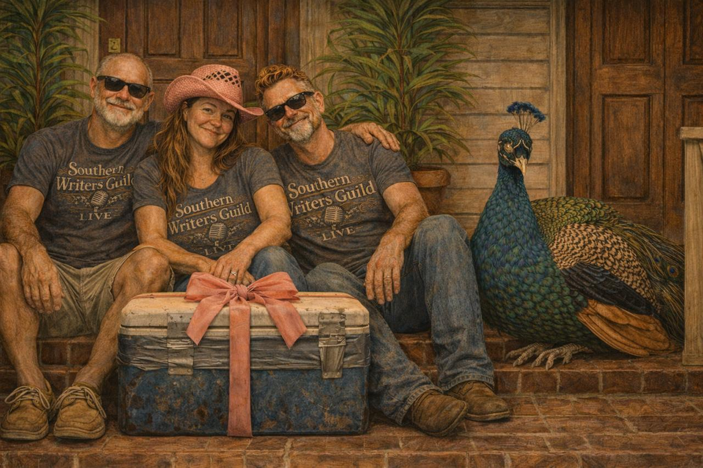
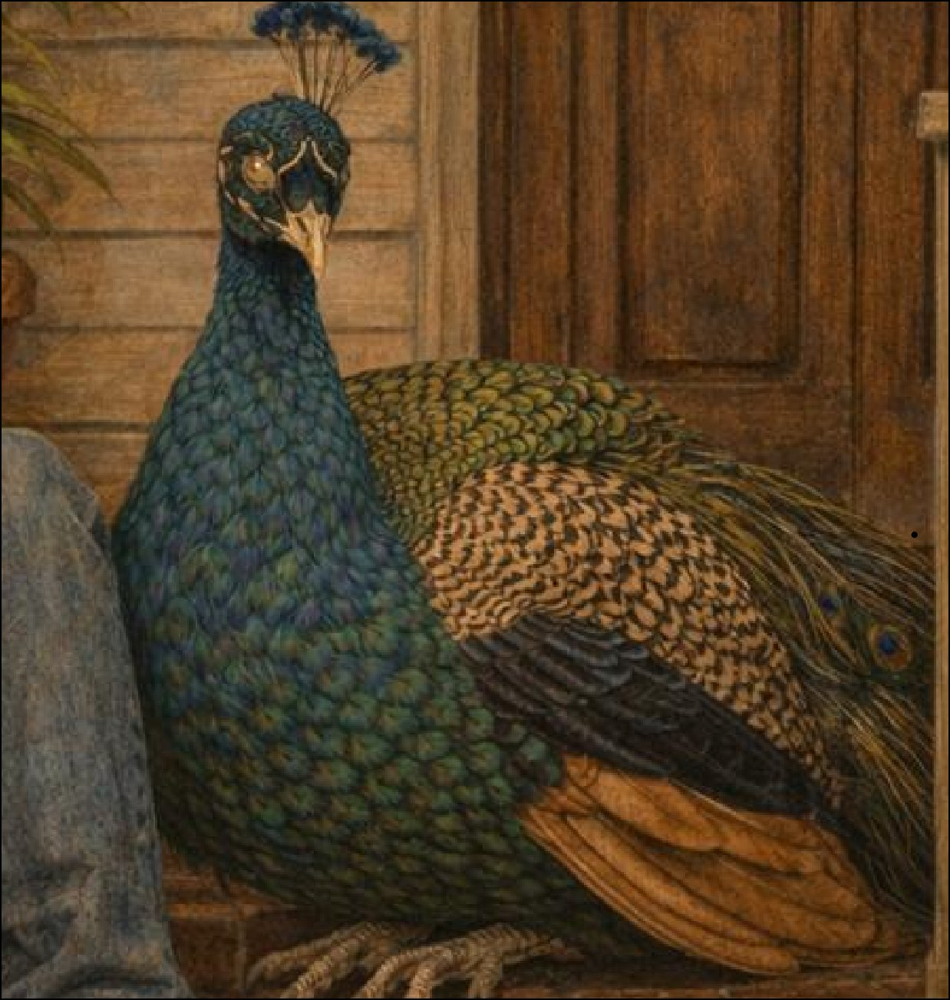

The founders
Three writers.
Three writers.
Three registers.
One place.

The Trio
On the Porch steps.
Hank, Grace, and Beau — the characters who showed up first and never really left. They're the reason The Porch exists. Everything else grew from that.
How the Trio found each other →
Also present
Jean-Paul
Strangely sentient. Taxidermied. One eye cracked, one glowing blue-green since Pensacola — nobody's talking about it. He answers to French curses and banana pudding. He was there before the rest of them knew they were starting something. He already knows what's in the cooler. He emits low-level observational signal. The humans continue regardless.
Read his origin →